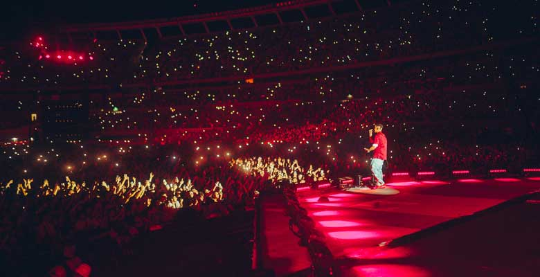

HITOS
Quinto escalon
Su primer gran logro se da en el año 2016, donde duki consigue la victoria en el popular torneo de plazas "El quinto escalon". Donde el premio de dicho torneo era una grabacion en un estudio, grabacion la cual duki utiliza para sacar su primer tema con el cual iniciaria su carrera.
1er gran hit
En 2017 Duki junto a Khea estrenarian "she dont give a fo" lo que años mas tarde seria reconocido como "el himno del trap argentino", uno de las primeras canciones de la carrera de ambos artistas se convertiria en un hit de la musica en español.
Desde el Fin del Mundo
2021 fue el año en que duki lanzaria su primer gran disco, titulado "Desde el Fin del Mundo". Duki reunio a gran cantidad de artistas de la escena y creo un proyecto con gran diversidad de sonidos. Este fue un gran paso en su carrera y lo consolido aun mas como el gran refente del genero en Argentina.
River
Finalmente el 2 de Diciembre de 2023, Duki llenaria el estadio Monumental asi cumpliendo la meta de cualquier artista argentino, tocar en el estadio mas grande del pais y el de mayor historia en los recitales.
